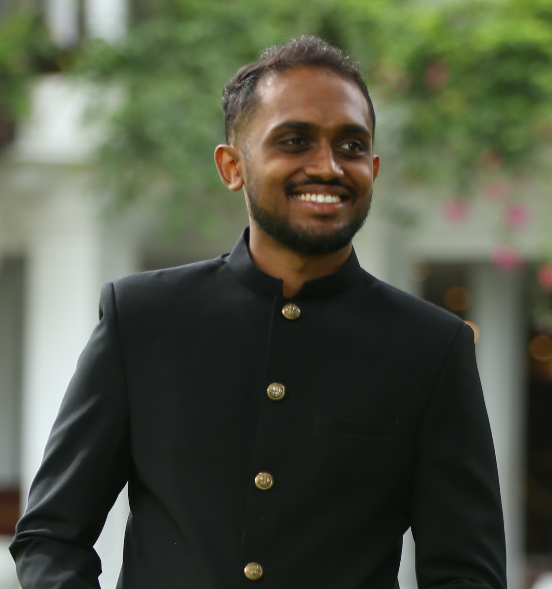

I am a PhD candidate in the Department of Electrical and Computer Engineering at University of California, San Diego. I direct the Existential Robotics Laboratory (ERL). I am affiliated with the Contextual Robotics Institute (CRI) at UCSD.
Before joining UCSD, I was a Postdoctoral Fellow at the department of Mechanical Engineering and Applied Mechanics, University of Pennsylvania, working with Vijay Kumar. I defended my Ph.D. dissertation on Active Information Acquisition with Mobile Robots at the department of Electrical and Systems Engineering, University of Pennsylvania in July, 2015. My advisors were George J. Pappas and Kostas Daniilidis.
I received an M.S. degree in Electrical Engineering from the University of Pennsylvania, Philadelphia, PA, in 2012 and a B.S. degree in Electrical Engineering from Trinity College, Hartford, CT, in 2008.
Email: natanasov@ucsd.edu
Office: Franklin Antonio Hall 3304
Lab: Franklin Antonio Hall 3301
My research goal is to develop scientific principles for increasing the reliability, efficiency, and versatility of autonomous robot systems. My work focuses on autonomous information collection using ground and aerial mobile robots in localization and mapping, environmental monitoring, and security and surveillance applications. My research contributions include probabilistic environment models that unify geometry and semantics and optimal control and reinforcement learning algorithms for minimizing uncertainty in these models.
The fields relevant to my research are robotics, machine learning, control theory, optimization, and computer vision.
List your publications here...
Your CV details here...